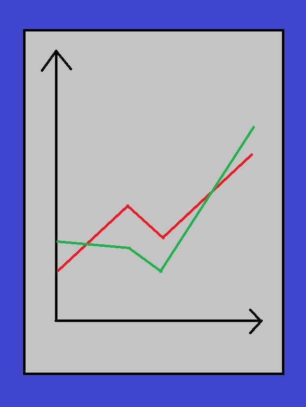

กำลังใจจากรุ่นพี่
1. กำลังใจจากรุ่นพี่
Click Link to Main Pageระดับของเนื้อหาในเรื่องสั้น : เหมาะสมสำหรับบุคคลทั่วไป (PG)
เว็บไซต์สำหรับอ่านเรื่องสั้น : Dek-D และ readAwrite
Click Link to Dek-D Click Link to readAwriteลิขสิทธิ์ของเรื่องสั้น : 2026 กำลังใจจากรุ่นพี่ mami_rianerva All Rights Reserved
ตัวอย่างเรื่องสั้น
ผู้ชมสามารถอ่านเนื้อเรื่องเต็มของเรื่องสั้นโดยกดที่ Click Link to Dek-D หรือ Click Link to readAwrite

ผมชื่อเมฆกำลังยืนอยู่ด้านหน้าห้องเรียนซึ่งมีนักศึกษาน้อยเพราะตอนนี้เวลาเที่ยง หลายคนไปทานข้าวที่โรงอาหารหรือลานอ่านหนังสือใกล้กับอาคาร การสอบปลายภาควิชาพยากรณ์เพื่อการวางแผนทางธุรกิจในเวลาบ่ายโมงเป็นการสอบที่ดูเคร่งเครียดมากเพราะวิชาเลือกของภาควิชาวิศวกรรมศาสตร์สาขาวิศวกรรมอุตสาหการเป็นวิชาที่สอบวันสุดท้ายของสัปดาห์การสอบปลายภาค หากเราผ่านวิชานี้ไป ชีวิตนักศึกษาของเราจะจบ
"เมฆ"ผู้หญิงคนหนึ่งทำให้ผมหันมา เธอคือพี่ดาว นักศึกษาคณะวิศวกรรมศาสตร์สาขาวิศวกรรมอุตสาหการสาขาเดียวกับผม แต่เธออยู่ชั้นปี 5 ส่วนผมอยู่ชั้นปี 4 เหตุผลที่เธอเรียนวิชาพยากรณ์อีกหนึ่งรอบเพราะเธอได้เกรด F
"พี่ดาว เมื่อคืนนอนกี่โมงครับ"
"สองทุ่มค่ะ"
"เมฆนอนกี่โมง"
"ห้าทุ่มครับพี่"เมื่อวานผมมีสอบตอนเก้าโมงถึงสี่โมงเย็น พอสอบเสร็จผมนอนหลับตอนประมาณหกโมงหลังทานข้าวเย็นเสร็จ จากนั้นตื่นมาตอนสองทุ่มเพื่อทบทวนบทเรียนวิชาการพยากรณ์จน ถึงห้าทุ่มแล้วนอนต่อ ถึงรู้สึกนอนไม่ค่อยหลับจนกระทั่งตื่นมาตอนแปดโมงของวันนี้
"เราจดใส่กระดาษขนาดนี้คิดว่าจะช่วยได้เปล่า"เธอถามเรื่องกระดาษแผ่นหนึ่งที่ผมเอามาซึ่งเขียนเนื้อหาในบทเรียนเต็มหน้ากระดาษเช่น สูตร หรือ ตัวอย่างโจทย์แบบย่อ เพราะวิชานี้อนุญาตให้เอากระดาษแผ่นหนึ่งจดข้อความด้วยลายมือตัวเองและเครื่องคิดเลขเข้าห้องสอบ
"อย่างน้อยผมจะไม่ลืมว่าวิธีพยากรณ์ใช้ยังไง"
"ข้อสอบไม่ได้ยากขนาดนั้นเมฆ เพียงแต่ตอนทำข้อสอบอ่านโจทย์ดีๆ ว่าเขาให้ใช้วิธีอะไร ให้ใช้วิธีนั้น"
"ไปหาที่นั่งก่อนไหม"
"ได้ครับ"